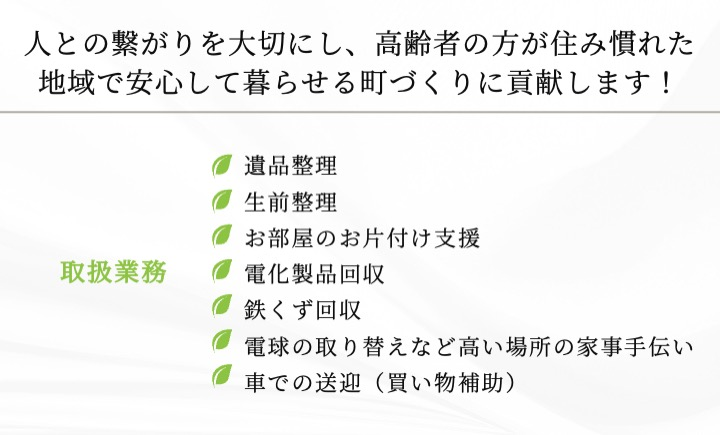

🏠 片付け・遺品整理
ご自宅や店舗の不用品をまとめて回収。遺品整理も一つずつ丁寧に対応します。
詳しく見る →
ご自宅や店舗の不用品をまとめて回収。遺品整理も一つずつ丁寧に対応します。
詳しく見る →銅・真鍮・鉄くず・バッテリーなど幅広く対応。現地計量で正確な価格をご提示。
詳しく見る →お急ぎの場合でもご相談ください。大阪府全域に対応しています。
電話で相談する →古物商・金属屑・産業廃棄物収集運搬の許可を取得。法令に基づいた適正処理を行います。
門真市を中心に大阪全域で活動。地域の皆様に信頼いただいている実績があります。
まずはお気軽にご連絡ください。現地確認の上、明朗な価格をご案内します。
「急いで片付けたい」「まずは相談だけしたい」など、どんなことでもお気軽にご連絡ください。
090-2590-4985 に電話する